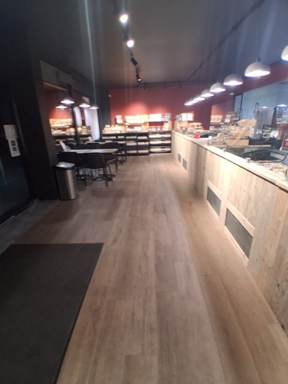
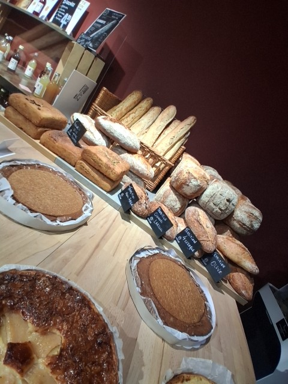
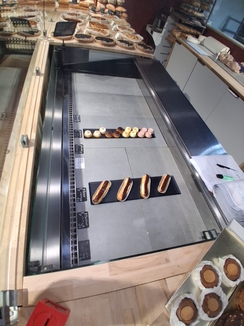
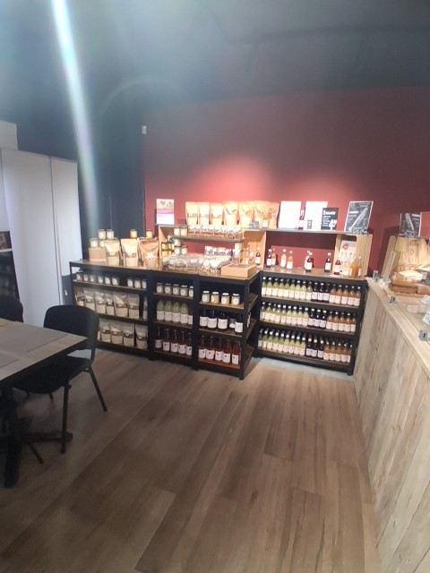
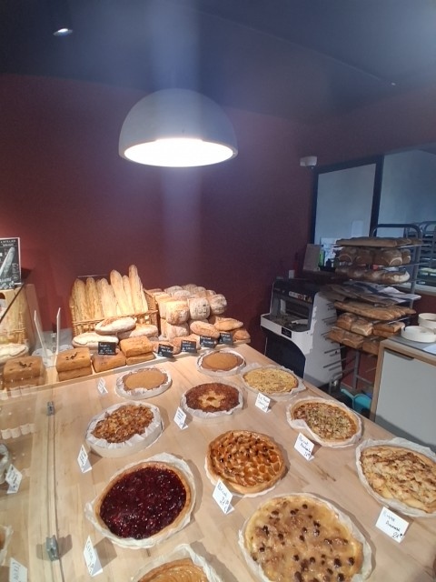
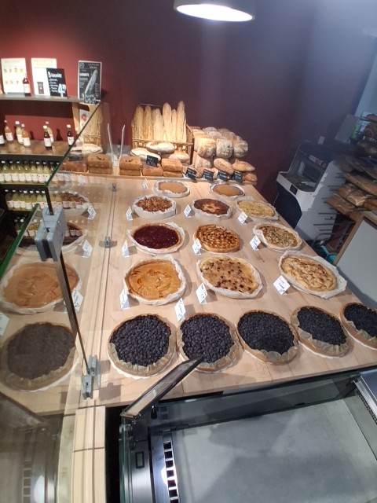
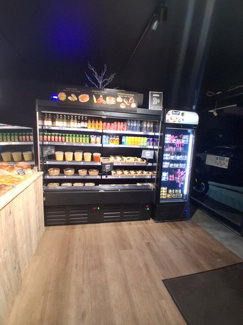

Date
📊 Les chiffres📷 Les contrôles 1 écartla même journée, vue par ce que l’équipe a montré · la bascule reste sur la page choisie
Rendues
11 / 16
dernière à 04:11 · Obchette S.
Photos du jour
9
+ 2 clôturées sans photo le 26/09
Note moyenne
4,0 / 5
8 photos notées par Sam Verheyden à 13:55
Écarts
1
mineur · Comptoir Traiteur — Assortiment
À contrôler
1
Comptoir Épicerie, rendue à 04:10
Non rendues
5
Biscuiterie, Pâtisseries · 3 CQ Formation Cuisine
CO-01 — Ouverture1 / 1 rendue · 04:09 · Obchette S.

04:094/5Magasin propre
04:09 · Obchette S.
CO-10 - Contrôle opérationnel Boulangerie1 / 1 rendue · 04:11 · Obchette S.

04:114/5Étiquetage prix & allergènes
04:11 · Obchette S.
CQ-02 — Contrôle qualité d'ouverture7 / 9 rendues · 04:09 → 04:11 · Obchette S.

1. Assortiment04:113/5Traiteur
04:11 · Obchette S.

04:10à contrôlerÉpicerie
04:10 · Obchette S.

04:094/5Pains & Boulangerie
04:09 · Obchette S.
 04:105/5
04:105/5Viennoiseries
04:10 · Obchette S.

04:094/5Tartes
04:09 · Obchette S.
 04:104/5
04:104/5Quiches
04:10 · Obchette S.

04:094/5Boissons
04:09 · Obchette S.
✗pas de photonon rendue
Biscuiterie
pas rendue ce jour
✗pas de photonon rendue
Pâtisseries
pas rendue ce jour
CQ-F1 — Contrôle qualité : Formation Cuisine 10 / 5 rendue
✗pas de photonon rendue
Pâtes à l’arrabiata
pas rendue ce jour
✗pas de photonon rendue
Poulet Cacahuète & Riz
pas rendue ce jour
✗pas de photonon rendue
Poulet Jaune & Riz
pas rendue ce jour
—clôturée sans photole 26/09 à 05:03
Pâtes à l’Amatriciana
clôturée le 26/09 à 05:03
—clôturée sans photole 26/09 à 05:03
Spaghetti Bolognaise
clôturée le 26/09 à 05:03
1. Assortiment3/5 · mineure
Comptoir · Traiteur
CQ-02 — Contrôle qualité d'ouverture
1. Assortiment — écart mineur relevé sur la vitrine
- Rendue
- à 04:11 par Obchette S.
- Contrôlée
- 3/5 à 13:55 par Sam Verheyden
- Maîtrise
- 3,8 / 5 sur 5 contrôles
- La veille
- aucune tâche notée le 23/09